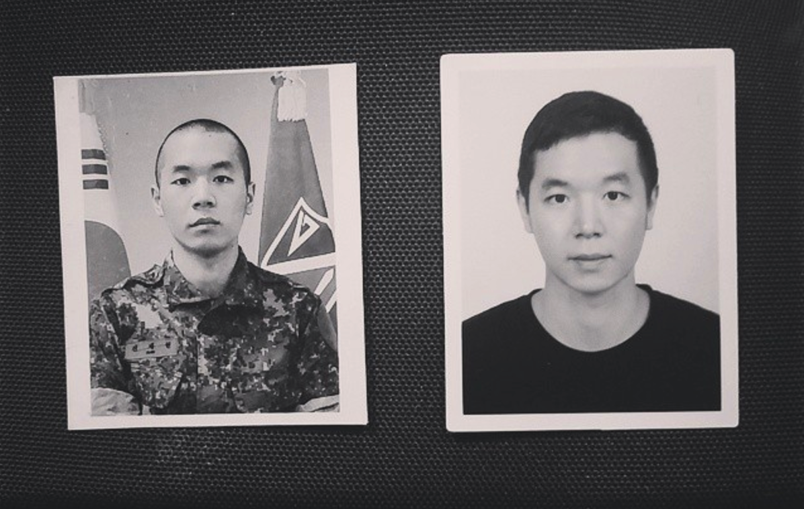

My name is Brian Shin and I moved out to the Bay Area last year after graduating Carnegie Mellon Univsersity in Pittsburgh. I was born in Pittsburgh, grew up in Hong Kong and Korea, and came back to the States for school. I had to take two years off after my sophomore year to serve my mandatory military service for Korea (SOUTH not NORTH).
While I was in the military I grew an interest in the Tech boom of Silicon Valley and decided to pursue a career here. As an Economics major, I had no technical skills so decided to get my foot in the door first by finding a non-engineer position in a tech company. I landed a job as a Campaign Manager for online ad campaigns at a company called Tubemogul. However, 4 months after joining, we got acquired by Adobe. It has been a short yet wild ride so far and right now I'm just focusing on learning as much as I can and get exposed to different parts of the industry to find what I truly want for myself.

In my free time I enjoy hanging out with my friends by finding good spots to eat, going to music shows or art exhibitions, and playing soccer. I'm a huge fan of Arsenal which is a team in England's Premier League.